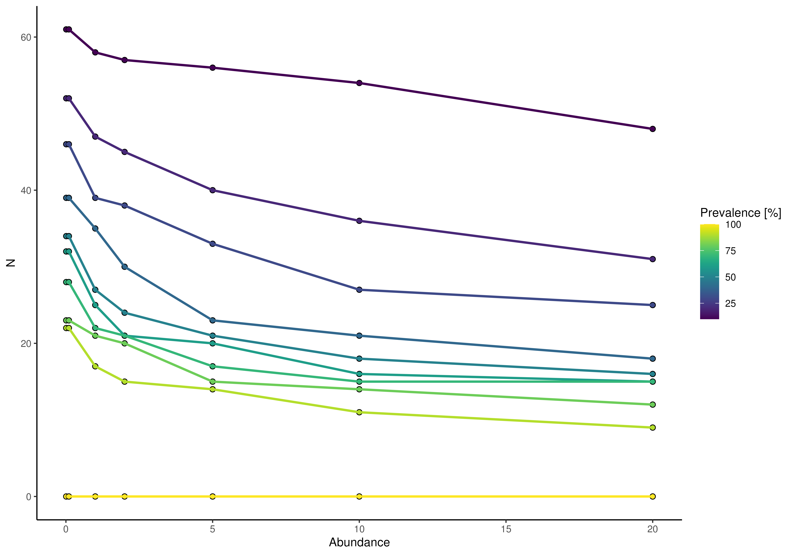
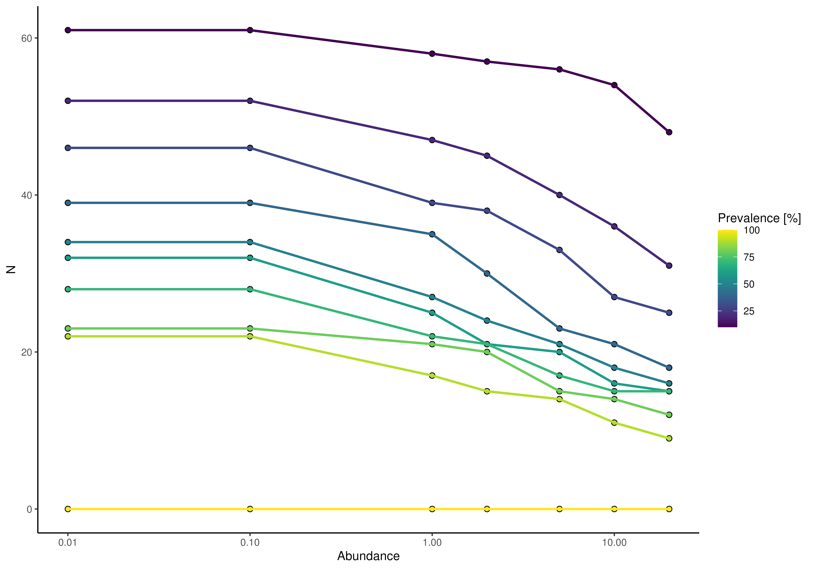

Plot prevalence information
plotPrevalence.RdplotPrevalence and plotTaxaPrevalence visualize prevalence
information.
plotPrevalence(x, ...)
# S4 method for SummarizedExperiment
plotPrevalence(
x,
detections = c(0.01, 0.1, 1, 2, 5, 10, 20)/100,
prevalences = seq(0.1, 1, 0.1),
assay.type = assay_name,
assay_name = "counts",
as_relative = TRUE,
rank = NULL,
BPPARAM = BiocParallel::SerialParam(),
...
)
plotPrevalentAbundance(x, ...)
# S4 method for SummarizedExperiment
plotPrevalentAbundance(
x,
rank = taxonomyRanks(x)[1L],
assay.type = assay_name,
assay_name = "counts",
as_relative = TRUE,
colour_by = NULL,
size_by = NULL,
shape_by = NULL,
label = NULL,
facet_by = NULL,
...
)
plotTaxaPrevalence(x, ...)
# S4 method for SummarizedExperiment
plotTaxaPrevalence(
x,
rank = taxonomyRanks(x)[1L],
assay.type = assay_name,
assay_name = "counts",
detections = NULL,
ndetections = 20,
as_relative = TRUE,
min_prevalence = 0,
BPPARAM = BiocParallel::SerialParam(),
...
)Arguments
- x
a
SummarizedExperimentobject.- detections
Detection thresholds for absence/presence. Either an absolutes value compared directly to the values of
xor a relative value between 0 and 1, ifas_relative = TRUE.- prevalences
Prevalence thresholds (in 0 to 1). The required prevalence is strictly greater by default. To include the limit, set
include_lowesttoTRUE.- assay.type
a
charactervalue defining which assay data to use. (default:assay.type = "relabundance")- assay_name
a single
charactervalue for specifying which assay to use for calculation. (Please useassay.typeinstead. At some pointassay_namewill be disabled.)- as_relative
logical scalar: Should the detection threshold be applied on compositional (relative) abundances? Passed onto
getPrevalence. (default:TRUE)- rank, ...
additional arguments
If
!is.null(rank)matching arguments are passed on toagglomerateByRank. See?agglomerateByRankfor more details.additional arguments for plotting. See
mia-plot-argsfor more details i.e. callhelp("mia-plot-args")
- BPPARAM
A
BiocParallelParamobject specifying whether the UniFrac calculation should be parallelized.- colour_by
Specification of a feature to colour points by, see the
byargument in?retrieveFeatureInfofor possible values. Only used withlayout = "point".- size_by
Specification of a feature to size points by, see the
byargument in?retrieveFeatureInfofor possible values. Only used withlayout = "point".- shape_by
Specification of a feature to shape points by, see the
byargument in?retrieveFeatureInfofor possible values. Only used withlayout = "point".- label
a
logical,characterorintegervector for selecting labels from the rownames ofx. Ifrankis notNULLthe rownames might change. (default:label = NULL)- facet_by
Taxonomic rank to facet the plot by. Value must be of
taxonomyRanks(x)Argument can only be used in function plotPrevalentAbundance.- ndetections
If
detectionsisNULL, a number of breaks are calculated automatically.as_relativeis then also regarded asTRUE.- min_prevalence
a single numeric value to apply as a threshold for plotting. The threshold is applied per row and column. (default:
min_prevalence = 0)
Value
A ggplot2 object or plotly object, if more than one
prevalences was defined.
Details
Whereas plotPrevalence produces a line plot, plotTaxaPrevalence
returns a heatmap.
Agglomeration on different taxonomic levels is available through the
rank argument.
To exclude certain taxa, preprocess x to your liking, for example
with subsetting via getPrevalentTaxa or
agglomerateByPrevalence.
Examples
data(GlobalPatterns, package = "mia")
# plotting N of prevalence exceeding taxa on the Phylum level
plotPrevalence(GlobalPatterns, rank = "Phylum")

plotPrevalence(GlobalPatterns, rank = "Phylum") + scale_x_log10()

# plotting prevalence per taxa for different detection thresholds as heatmap
plotTaxaPrevalence(GlobalPatterns, rank = "Phylum")
 # by default a continuous scale is used for different detection levels,
# but this can be adjusted
plotTaxaPrevalence(GlobalPatterns, rank = "Phylum",
detections = c(0, 0.001, 0.01, 0.1, 0.2))
# by default a continuous scale is used for different detection levels,
# but this can be adjusted
plotTaxaPrevalence(GlobalPatterns, rank = "Phylum",
detections = c(0, 0.001, 0.01, 0.1, 0.2))
 # point layout for plotTaxaPrevalence can be used to visualize by additional
# information
plotPrevalentAbundance(GlobalPatterns, rank = "Family",
colour_by = "Phylum") +
scale_x_log10()
# point layout for plotTaxaPrevalence can be used to visualize by additional
# information
plotPrevalentAbundance(GlobalPatterns, rank = "Family",
colour_by = "Phylum") +
scale_x_log10()
 # When using function plotPrevalentAbundace, it is possible to create facets
# with 'facet_by'.
plotPrevalentAbundance(GlobalPatterns, rank = "Family",
colour_by = "Phylum", facet_by = "Kingdom") +
scale_x_log10()
# When using function plotPrevalentAbundace, it is possible to create facets
# with 'facet_by'.
plotPrevalentAbundance(GlobalPatterns, rank = "Family",
colour_by = "Phylum", facet_by = "Kingdom") +
scale_x_log10()